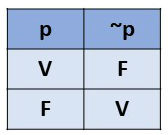
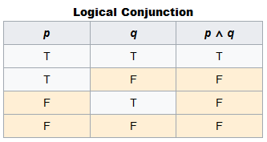
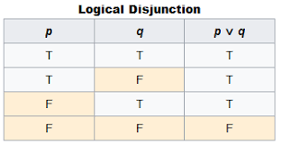

Operadores - Parte 02 - Aula 08 - Ex006
Voltar para HOME
Operadores Relacionais
> - MAIOR
< - MENOR
>= - MAIOR OU IGUAL
<= - MENOR OU IGUAL
== - IGUAL
!= - DIFERENTE
=== - OPERADOR DE IDENTIDADE RESTRITA, pois verifica
se tem mesmo valor e mesmo tipo. 5 == '5' true | 5 === '5'
false .
!=== - podemos chamar de operador NÃO IDÊNTICO
NOTA: primeiro realizamos os operadores aritméticos e depois os
relacionais
Operadores Lógicos
! - NEGAÇÃO

&& - E (CONJUNÇÃO)

|| - OU (DISJUNÇÃO)

NOTA: primeiro realizamos os operadores aritméticos, depois os
relacionais e depois os lógicos
NOTA: primeiro NÃO, depois E e depois OU
Operadores Ternários
nota média >= 7 - bloco de teste
? - if - bloco verdadeiro
: - if else - bloco falso
nota média >= 7 ? "aprovado"
: "reprovado"
NOTA: Chamamos de ternários porque operamos três vezes na lógica para
chegarmos a um resultado